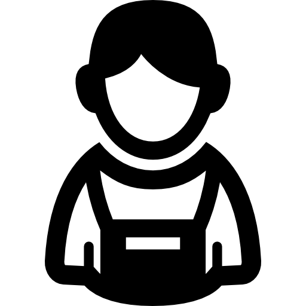

<!--
  Generated template for the SorgPage page.

  See http://ionicframework.com/docs/components/#navigation for more info on
  Ionic pages and navigation.
-->


<ion-content padding>

  <p style="font-size:30px; text-align: center;"> Are you a student or a graduate? </p>

    <div class="div">
      
      <button class="btn"style="   position: absolute;margin-top: 25%; left: 70%;"
       (click)="graduates()">High School Student</button>
    </div>

    <div class="div">
        
        <button class="btn" style="   position: absolute;margin-top: 45%; left: 70%;"
         (click)= "students()" >High School Student</button>
    </div>
      
</ion-content>
